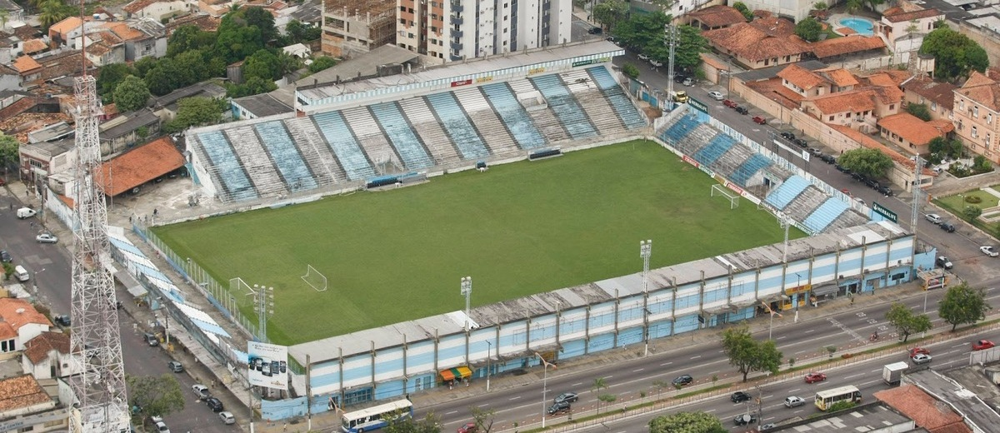

Sobre
O Paysandu Sport Club surgiu em 2 de fevereiro de 1914, em Belém do Pará, quando um grupo de ex-membros do Norte Club decidiu fundar uma nova equipe. Insatisfeitos com decisões internas, eles buscaram criar um time mais forte e competitivo, escolhendo o nome Paysandu em homenagem à Batalha de Paysandú, um conflito da Guerra do Uruguai que simbolizava resistência e bravura. Desde o início, o clube adotou as cores azul e branca, que se tornariam icônicas no futebol paraense.
Ao longo dos anos, o Papão da Curuzu cresceu e se consolidou como um dos maiores clubes da região Norte do Brasil. Com uma torcida apaixonada e um histórico repleto de conquistas, o Paysandu se destacou em competições nacionais e internacionais, tornando-se referência no futebol brasileiro. Seu legado segue vivo, impulsionado pela tradição e pelo amor de seus torcedores.
Conquistas
Copa dos Campeões (2002)
Único clube do Norte a vencer a competição, garantindo vaga na Libertadores.
Campeão Brasileiro Série B (1991)
Conquista histórica que marcou o Paysandu como um dos grandes do futebol nacional.
Campeonatos Paraenses
Maior campeão estadual, acumulando diversos títulos e dominando o futebol paraense.
Curuzu
O Estádio da Curuzu, oficialmente chamado de Estádio Evandro Almeida, é a casa do Paysandu Sport Club e um dos templos do futebol paraense. Inaugurado em 1918, é o estádio particular mais antigo em atividade no Brasil e tem um significado histórico para os torcedores do Papão da Curuzu. Com capacidade para cerca de 16 mil pessoas, o estádio se destaca pelo clima intenso criado pela torcida bicolor, tornando-se um verdadeiro caldeirão em jogos decisivos. A Curuzu também foi palco de momentos icônicos do futebol paraense, consolidando-se como um dos principais estádios do Norte do país.
Além do fator esportivo, a Curuzu é um símbolo de identidade e tradição para os torcedores do Paysandu. O estádio representa a ligação emocional entre o clube e sua torcida, sendo um ponto de encontro para gerações de apaixonados pelo Papão. Reformas e modernizações ao longo dos anos buscaram melhorar a estrutura do estádio, mantendo sua essência e o peso histórico que carrega. Seja em clássicos contra o Remo ou em batalhas pelo acesso em campeonatos nacionais, a Curuzu segue sendo um dos palcos mais emblemáticos do futebol brasileiro.